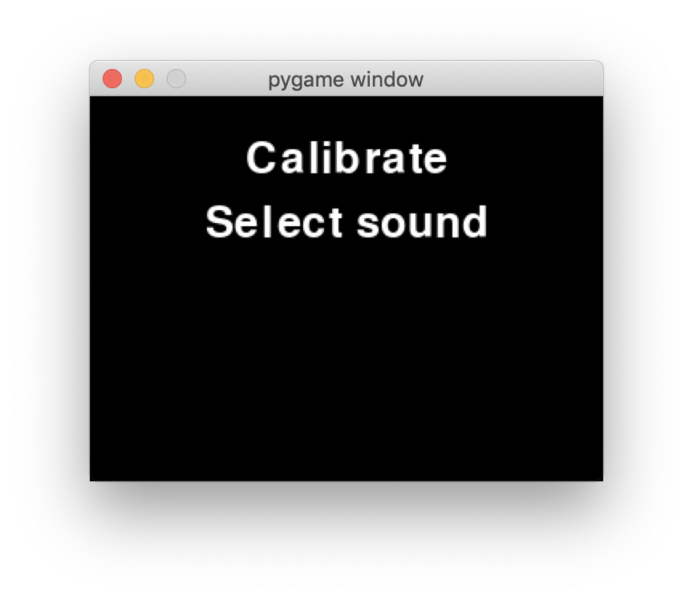

Theremin 2.0!
Theremin 2.0!

ECE 5725 Final Project
Demo date: Monday 05/18/2020


 Jump to report! »
Jump to report! »

Objective
Our goal in this project was to design a feature-packed digital theremin using a Raspberry Pi 3 Model B+. This entailed concurrently polling two distance sensors over an I2C connection, interpreting user controls, and generating and modulating sound waves without noticeable delay. The final product had to combine all these tasks into an expressive and responsive system that would be a joy to play.
Introduction
For our final project, we decided to build a unique musical device that can be played without physical contact: a theremin. A theremin consists of two main components: the pitch antenna and a volume antenna. Moving your hands closer to or farther from these antennas allows you to control the pitch and volume of the theremin. After implementing this functionality, we decided to extend the functionality of our project. Our final theremin offers custom sensor calibration, an extensive sound bank, auto-snapping to notes, and a loop pedal.
Design and Testing
We split the design of the project into three parts: sensor selection and processing, user interface design, and audio synthesis.
Sensor Selection
A theremin senses the distance of the player’s hands to the pitch and volume components, so we need to choose a sensor that can accurately measure this. We came up with a short list of possible methods for accurate hand position measurement. The first is using an analog design and interpreting disruptions in an emitted electric field. Other methods include a camera-aided design and a pair of distance sensors (one for pitch and one for volume). The analog antenna-based design is interesting and would be true to the original design of a theremin, but we want to explore the feasibility of designing a digital theremin. The camera-based design, while digital, is unnecessary. We really only need two sensor readings, and having to set up an entire computer vision system is overkill. That leaves the distance sensor-based design.
There are many different types of distance sensors suited for different applications. We want a low minimum range, decent maximum range, high throughput, and high precision sensors. Some common distance sensor technologies include LED, LIDAR, ultrasonic, and VCSEL (Vertical Cavity Surface Emitting Laser). Among these, VCSEL is the closest to our desired parameters. More information is available here. We went with the Sparkfun VL53L1X distance sensor, which is a VCSEL Time of Flight sensor that was accurate to within a mm within a reasonable distance range (in our case, 1 - 2 meters).
Sensor Integration
Our VL53L1X sensors operate over I2C, so it is simple to set up. Additionally, Sparkfun provides a Python library for this exact sensor, so we did not need to manually set anything up. However, when we tried to connect both sensors to the Pi we ran into our first hurdle: an I2C address collision. Both sensors live on address 0x29, so when both sensors were connected only one would appear to be connected. To solve this issue, we added sensor setup code that powers off one of the sensors while changing the I2C address of the remaining connected sensor. Once we were able to print the recorded distances of both sensors to our screen simultaneously, our initial sensor integration phase had concluded. Some high-level code for this reset functionality is below (more is available in our GitHub repository. See sensor.py).
self.disable_sensors()
self.enable_sensor(self.pitch_reset_pin)
self.pitch_sensor = qwiic_vl53l1x.QwiicVL53L1X(address=0x29)
self.pitch_sensor.set_i2c_address(self.pitch_address)
self.enable_sensor(self.vol_reset_pin)
self.vol_sensor = qwiic_vl53l1x.QwiicVL53L1X(address=0x29)
self.vol_sensor.set_i2c_address(self.vol_address)
We added a few functions to retrieve sensor readings as well as functions to calculate volume and pitch values given desired sensor ranges. One thing to note is that the calculated pitch is actually rounded to the nearest true note, rather than the directly calculated frequency. To prevent cluttering the global namespace with pin values and GPIO code, we put all of this functionality in a Sensor class. You can view the Sensor class at our GitHub repository.
Audio Synthesis
Generating audio was the most challenging part of this project, and we ran into many issues before we came to a final product. After working on one solution for some time, we reached a point where we could not continue to expand our design, rendering all past work useless. Below, we first discuss our early solutions and why they failed before discussing what finally worked.
Our first attempt to generate sound was to use the Python library PyAudio. This library is quite low-level, allowing users to program individual samples of a sound wave. For example, to output a sine wave, the programmer could write a sine function and pass that into PyAudio. Below is a snippet of how one could output a sine wave using PyAudio.
p = pyaudio.PyAudio()
# Generate samples
samples = (np.sin(2*np.pi*np.arange(sample_rate*duration)*frequency/sample_rate)).astype(np.float32)
stream = p.open(format=pyaudio.paFloat32,
channels=1,
rate=fs,
output=True)
stream.write(volume*samples)This worked well for us initially, but we noticed that real-time changes in frequency resulted in crackling sounds due to the misalignment of the old and new waves. To combat this, we wrote a Python generator function that would correctly handle new frequencies. Below is some code showing how we did this. More is available at our GitHub repository, in theremin.py.
def tone_gen():
sample_index = 0
phase = 0
while RUNNING:
f = self.get_frequency(TONE)
t_start = sample_index * self.chunk_size
phase_delta = 2 * np.pi * f / self.sampling_rate
x_vals = np.linspace(phase, phase + phase_delta * self.chunk_size, self.chunk_size, endpoint=False)
sound = np.sin(x_vals).astype(np.float32)
phase = (phase + phase_delta * self.chunk_size) % (2 * np.pi)
sample_index += 1
yield sound * VOLUME
tone_generator = tone_gen()
The tone_generator would then be passed into PyAudio, which would call it appropriately. However, this was quite computationally expensive, and we did not see a clear way to add more complex sounds. Python is already quite slow, and coupled with the Pi’s limited power, this solution was simply too demanding.
We then tried using PyGame to generate audio. This seemed like a nice solution, since we did not have to include any additional libraries. However, we quickly ran into issues. PyGame’s mixer module depends on the PyGame event loop, so all audio events had to be handled in the same place as GUI events. This means that the GUI and audio logic would have to run on the same thread, making it impossible to handle GUI events independently of audio events. We tried running two processes of PyGame using Python’s multiprocessing library, but this was too demanding on the Pi. Additionally, PyGame’s audio module does not offer as much control as PyAudio did, so changing pitch and volume in real time was difficult.
We finally settled upon Pyo, a Python DSP library implemented in C developed by Ajax Sound Studio. Compared to the previous solutions, Pyo uses wavetable synthesis, which makes it easier to add more complex sounds. For example, to add a guitar sound to the theremin, we would just need a sample of a guitar strum.
We first wanted to play synth pad sounds that would seamlessly loop. To do this we generated and exported synth samples as .wav files using the Sytrus plugin in FL Studio 20. After loading the samples into Pyo using its SndTable object (a simple object that loads a file into memory), we created a Looper object to loop them over and over again. An issue with this is that the boundaries between consecutive plays of the sample are very audible. To fix this, we ignore the first 2 seconds of the sample so that any transient sounds are ignored, and then we apply a crossfade on the consecutive plays of the sample. This required a lot of experimenting to get right, but once we got the parameters figured out, we could easily load any synth sample and have it loop seamlessly. To adjust the pitch and volume of the sample, we use the Looper object’s setPitch() and setMul() functions. These functions change the synth’s pitch and volume in real-time. At this point, we could simply pipe the output of the Sensor class’s pitch and volume readings to the Looper object’s parameters, and we had a simple theremin. Code for all audio synthesis is available in synth.py.
Unfortunately, when running everything on the Pi, our theremin was still experiencing delays and audio artifacts, most likely due to the limited hardware we were working with. Rather than scrap our work, we decided to offload some computational cost. The Pi would handle all sensor and GUI logic, and it would send all controls related to audio to a server running on a laptop, which would handle audio synthesis. We use the Open Sound Control protocol to send messages between the Pi and the laptop. The Pi would constantly poll the server with all relevant information, which at this point included pitch, volume, and tempo.
This greatly reduced the burden on the Pi and fixed all audio quality issues we had. Furthermore, the theremin device was now wireless as long as a separate device with speakers could communicate with the Pi over WiFi.
Controls
Once we had a method of generating sound and controlling it via our sensor class, we worked on integrating these components into a controller class and GUI.
Our controller had to store all state information, which includes the current sound being played, the tempo (if applicable), the sensor ranges, and much more. The controller would not only have to interact with a GUI and update the states accordingly, but also constantly send this information to the server. A full list of state information we ended up sending to the server is below:
- pitch - The pitch of the sound to be played (between 1 and 2)
- semitones - The pitch of the sound to be played, rounded to the nearest semitone (0 to 12)
- volume - The desired volume (0 to 1)
- bpm - The desired tempo of the audio output
- sound_id - The identifier of the sound sample being played
- record_command - A string telling the server whether to start, stop or reset a recording (this is used for the loop pedal, which will be explored in a later section)
- repeat - This tells the server whether we want to repeatedly play sounds at the given bpm or only play them once (e.g. for drum sounds)
- reverb - This tells the server how much reverb to add to the sound. This is only used when the theremin is in “fun mode” (explained in a later section).
User Interface
We first tried to design our GUI in PyGame. Below is an early prototype of our GUI.
We were quite disappointed with the tedious setup of simple components such as buttons in Pygame, and we aimed to use a different GUI framework. Kivy is a Python GUI framework that offers much higher-level functionality, such as creating buttons with actions, sliders, and tabbed menus. It also offers a high-level language for writing GUIs, similar to HTML. For example, instead of having to manually create rectangles and handle touch events, a button in Kivy could be written as:
Button:
text: ‘Do something’
on_press: do_something(); print(‘I did something’)
Unfortunately, Kivy does not work with the PiTFT out of the box. PiTFTs use the GPIO header for video output, and this bypasses the Pi’s internal video hardware. As a result, Kivy cannot render to the PiTFT by default. To get it working, we had to manually configure Kivy and run a framebuffer copying program to get Kivy to render on the PiTFT. To install Kivy, we first took the following steps.
- Revert all changes we made in lab to get Pygame working (this allows us to install SDL2 with minimal issues).
- Install Kivy dependencies:
sudo apt install libsdl2-dev libsdl2-image-dev libsdl2-mixer-dev libsdl2-ttf-dev pkg-config libgl1-mesa-dev libgles2-mesa-dev python-setuptools libgstreamer1.0-dev git-core gstreamer1.0-plugins-{bad,base,good,ugly} gstreamer1.0-{omx,alsa} python-dev libmtdev-dev xclip xsel libjpeg-dev - Install Cython and Pillow:
python3 -m pip install Cython==0.29.10 pillow - Install Kivy:
python3 -m pip install kivy
Then, to get Kivy to render to the screen, we took the following steps:
-
In ~/.kivy/config.ini, we added this in the [input] section. This fixes touch screen input handling.
[input] mouse = mouse mtdev_%(name)s = probesysfs,provider=mtdev hid_%(name)s = probesysfs,provider=hidinput,param=rotation=270,param=invert_y=1 - Download and run fbcp. For some reason we had a few issues with lag, so we have a modified version here.
With fbcp running in the background, Kivy could now properly render on the Pi and responded to touch controls.
The GUI object stores a copy of the controller. On every button press or slider move, we update the state of the controller. Meanwhile, another thread runs the controller’s main loop to poll the server and updates it with new information. When designing the GUI, we wanted to give the user as much power as possible, so we added buttons and sliders to control almost every aspect of audio synthesis. Below is a video stepping through the states of the GUI.
Tuning
Adding a tuning mechanism was the first of the design extensions that we had planned for our theremin. We proposed this feature because we felt that different users would feel comfortable with different distance thresholds creating changes in pitch. The primary feature we added to address this was the addition of minimum and maximum distance ranges that would be interpreted into the current pitch and volume. These values were stored as pitch_high/pitch_low and vol_high/vol_low in our Controller class and would be passed as parameters to our Sensor class when polling for the currently played pitch and volume. If the measured sensor distance was outside of our range, we would cap the change in pitch/volume to a full octave above/below the base note or max volume/zero volume. Additionally, if the user’s hand was beyond the maximum pitch range, we would set the volume to zero.
Sound Library
To add different types of sounds (e.g. drums, automatically looping melodies), we first designed them in FL Studio 20, exported them as .wav files, and made use of various Pyo objects to output them. To output single sounds, we simply create a sound table for that sample and play it using Pyo’s SndTable object. To play looping sounds at a set tempo, we use EventInstrument objects and sequence a set of events to be called at set intervals (using the bpm parameter received from the controller). Code for all audio synthesis is available in synth.py.
The major design choice we had to make was how to organize all these audio files. Our solution was to have dictionaries of SndTables preloaded onto the audio server. The controller (Pi) would then send a key value (this is the sound_id from the controller) that corresponded to a SndTable’s key, prompting the audio generating device to swap the table input to the Looper object. We kept two dictionaries: one for synths, and one for all other sounds. Since synths require more processing (e.g., crossfading) we kept their logic separate from other sounds such as bells and leads.
We also had to add some code to silence our Looper object when the drum sounds were being played, otherwise we would hear our instruments and drums played at the same time. Testing involved playing drum sounds successfully and switching between synths and drums without delay or errors.
Loop Pedal
The loop pedal was the final planned design extension for our theremin project. A loop pedal allows a skilled thereminist to play multiple measures over each other, creating the musical complexity of an entire song by themselves.
The Pyo Server object acts as an intermediary for the various audio producing elements of our project. A useful feature of the Server object is to record the sounds being played at any given moment with its recstart() and recstop() functions. Because of this, we were able to quickly create a loop pedal by simply recording the sounds being played by the user, saving them to a .wav, and playing that .wav file using a Looper object as the user continued to play new sounds or even new loops. Because the recstart() function records ALL audio output, recording multiple loops works out of the box and can be scaled to any number of loops. To avoid clipping when playing multiple sounds, we apply a small dampener on the output of the loop.
One of the design decisions that was made when implementing this feature was to only record for eight beats, which in 4/4 time equates to two measures. This could be edited quite easily in the synth.py to record more beats and create longer loops, and would be an interesting extension to the GUI. We omitted this from our project because the GUI was already getting quite complex, and we figured that recording eight beats by default was a safe default.
We also include a reset button to reset all recorded loops. This simply stops the looped audio from playing the saved loop.
Additional features
There were a few features that we placed under an “Options” menu for lack of better organization. They include a brand new “Fun” button, a switch to toggle whether the drum sounds will loop when chosen by the user, and a slider for setting the theremin bpm.
The “Fun” button, when active, makes a few important changes to the function of the theremin. Firstly, because we noticed that the volume sensor had little real use when playing our theremin, we changed the function of that sensor to control reverb. Reverb is calculated based on the distance the hand is from the sensor, just as with volume, however, instead of this value being used to set the intensity of the audio samples, we use it to control how many instances of the audio sample are played on top of each other, generating the reverb effect. There is also a slight change to the function of the pitch generating sensor. When toggled, this button will allow the user to use the exact pitch that their hand’s distance is generating rather than the pitch of the nearest true tone. Rather than rounding a distance corresponding to 260 Hz to C4 (261.6 Hz), we will play 260 Hz on the theremin.
The switch to toggle the drum loop is also quite straightforward. Rather than allow the Pyo Event object to loop infinitely, we set it to play a single time, allowing the user to now trigger the drum sound via their hands. The slider to adjust bpm was also a simple adjustment. We simply take the slider value from the Kivy object and apply it directly to our Controller’s state variable representing bpm. This value is then updated at the audio server on the next data transmission.